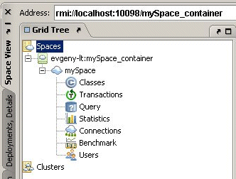
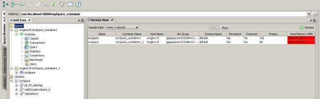
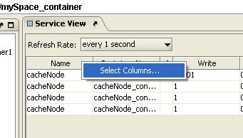
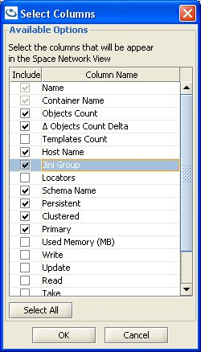
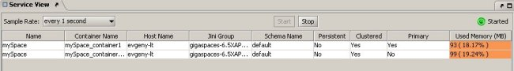
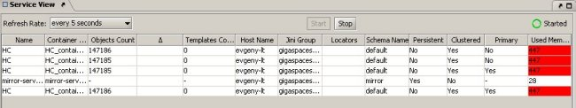
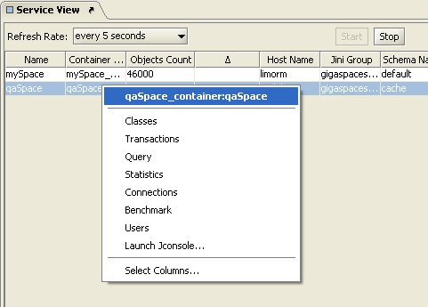
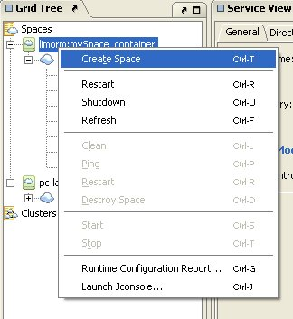
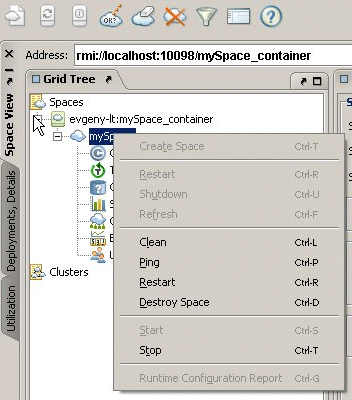
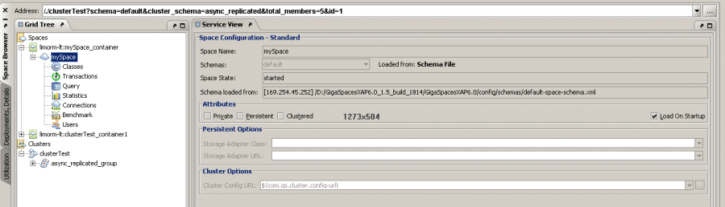

The left hand panel of the Space Browser is the Grid Tree. This panel allows you to view and manage all registered space containers, their spaces on the network and clusters.

The Grid Tree shows the following main types of nodes.
| Icon | Description |
|---|---|
| Root of the Spaces grid tree. | |
| Space Container node. | |
| Space node. | |
| Cluster node. |
Click the main node in the tree, labeled Spaces, to view all the spaces currently running in the network.

The table shows various information regarding each space. Each column represents a different type of information. You can select the columns you want to appear in the table by right-clicking one of the column names and clicking Select Columns:

In the Select Columns window, check the checkboxes of the columns you want to see, or Select All (automatically selects all checkboxes):

The Name (space name) and Space Container Name are default options and cannot be unchecked.
The columns to choose from are as follows:
The Objects Count column does not display the number of objects for persistent spaces running in LRU mode (this might result in very high CPU usage). To change this, see the Menus and Buttons section.
For this option to work, the Objects Count checkbox must also be selected.
Templates Count – the number of templates in the space.
Host Name – the name of the machine hosting the space container.
Jini Group – the Jini lookup group used when starting the space.
Locators – the Jini locators used when starting the space.
Schema name – the space's current schema.
Persistent – whether the space is persistent or not.
Clustered – whether the space participates in a cluster.
Primary – whether the space is primary (Yes) or a backup space (No).
Used Memory (MB) – the amount of used memory in this space, in MB. This column is highlighted in orange if the space memory usage is more than the minimum (low) watermark percentage and lower than the write only block percentage (defined in the memory usage tag), for example:

This column is highlighted in red if the space memory exceeds the write only block percentage (defined in the memory usage tag), for example:

For more details on memory usage, refer to the Memory Management section.
You can right-click a row in the table to view options for a space. These are the same options available under each space node (see Space Node below). Clicking one of the options in the context menu switches to the clicked view, and selects the space in the tree on the left. This is an easy way to access a space or any its sub-nodes directly, without expanding the Grid Tree.

You can choose to refresh the Space Network view periodically. Select the desired refresh rate from the Refresh Rate drop-down menu. To stop automatically refreshing the Space Network View, click the Stop button. When auto-refresh is running, a green blinking dot is displayed on the right side of the screen.
Right-clicking a Space container node invokes a context menu containing the following options:

When the space container node is selected, its configuration data is displayed in the configuration panel on the right side.
Selecting the space container node also makes available the three leftmost buttons on the button toolbar at the top of the GigaSpaces Browser screen. These allow you to create a space and perform several maintenance operations on the space container.
Space nodes represent a single space in the system.
The space node has five possible views:
Right-clicking a space node invokes a context menu containing the following options:

When a space node is selected, its configuration data is displayed in the Service View panel on the right side:

A cluster is a collection of spaces from one or more space containers. The cluster node in the Grid Tree represents a cluster of spaces.
For more details, refer to the Cluster View section.
The Service View panel takes up most of the Space Browser screen; it is located on the right of the Grid Tree panel. This panel shows configuration details for the node selected in the tree on the left, allowing you to edit some of them.